CODING AGENTS AS PIXEL WORLD MODELS
traex/DeepSeek-V4.1-Flash · 0111
点击播放 · 原生 RGB 像素
逐轮保存的候选
回放视频、检查图与代码变化。
每份候选均可单独播放。实际图片检查记录在下方工具轨迹中。
候选 01播放与检查图
点击播放 · 原生 RGB 像素
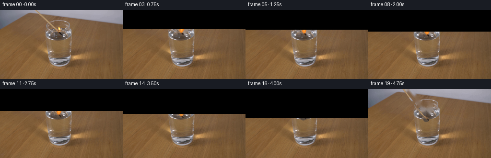
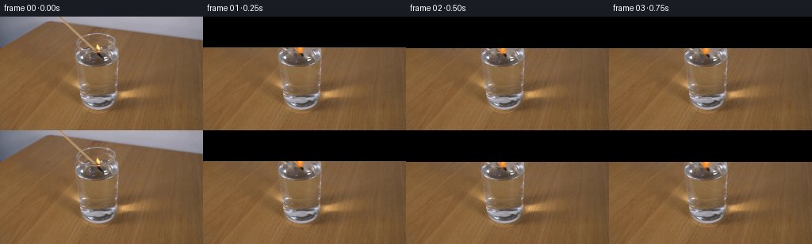
展开代码变化
--- 上一保存版本
+++ 本次保存版本
@@ -0,0 +1,272 @@
+from pathlib import Path
+
+import cv2
+import numpy as np
+from PIL import Image, ImageDraw
+
+import artifact_io
+
+
+ROOT = Path(__file__).resolve().parent
+WIDTH, HEIGHT = 256, 144
+FRAME_COUNT = 20
+WATER_Y = 60.5
+
+
+def smoothstep(edge0, edge1, value):
+ t = np.clip((value - edge0) / (edge1 - edge0), 0.0, 1.0)
+ return t * t * (3.0 - 2.0 * t)
+
+
+def build_clean_plate(source):
+ """Remove the match and flame while retaining the tabletop and glass."""
+ bgr = cv2.cvtColor(source, cv2.COLOR_RGB2BGR)
+ mask = np.zeros((HEIGHT, WIDTH), np.uint8)
+
+ # The match shaft, charred head, and the small hot region around the flame.
+ shaft = np.array([[76, 0], [89, 0], [127, 47], [119, 51]], np.int32)
+ cv2.fillPoly(mask, [shaft], 255)
+ cv2.ellipse(mask, (121, 47), (10, 8), 0, 0, 360, 255, -1)
+ cv2.ellipse(mask, (124, 39), (10, 14), 0, 0, 360, 255, -1)
+ mask = cv2.dilate(mask, np.ones((3, 3), np.uint8), iterations=1)
+
+ clean = cv2.inpaint(bgr, mask, 5, cv2.INPAINT_TELEA)
+ clean = cv2.cvtColor(clean, cv2.COLOR_BGR2RGB)
+
+ # Remove the isolated flame highlight without flattening the whole glass rim.
+ clean = clean.astype(np.float32)
+ return clean, mask
+
+
+def match_alpha(dy):
+ """Anti-aliased source-space mask for the wooden shaft and burnt head."""
+ yy, xx = np.mgrid[0:HEIGHT, 0:WIDTH].astype(np.float32)
+ center = 85.0 + 0.745 * yy
+ shaft_distance = np.abs(xx - center)
+ shaft = 1.0 - smoothstep(1.15, 2.35, shaft_distance)
+ shaft *= smoothstep(-1.0, 0.2, yy)
+ shaft *= 1.0 - smoothstep(45.0, 49.0, yy)
+
+ hx = (xx - 120.5) / 6.4
+ hy = (yy - 47.3) / 5.2
+ head_distance = np.sqrt(hx * hx + hy * hy)
+ head = 1.0 - smoothstep(0.82, 1.08, head_distance)
+
+ # A slightly ragged carbon shoulder joins the shaft to the match head.
+ shoulder_x = (xx - 116.0) / 4.5
+ shoulder_y = (yy - 43.5) / 4.0
+ shoulder = 1.0 - smoothstep(0.75, 1.15, np.sqrt(shoulder_x**2 + shoulder_y**2))
+ return np.clip(np.maximum.reduce([shaft, head, shoulder]), 0.0, 1.0)
+
+
+def warp_match(source, dy):
+ alpha = match_alpha(0.0)
+ matrix = np.float32([[1.0, 0.0, 0.0], [0.0, 1.0, dy]])
+ color = cv2.warpAffine(
+ source,
+ matrix,
+ (WIDTH, HEIGHT),
+ flags=cv2.INTER_LINEAR,
+ borderMode=cv2.BORDER_REPLICATE,
+ ).astype(np.float32)
+ shifted_alpha = cv2.warpAffine(
+ alpha,
+ matrix,
+ (WIDTH, HEIGHT),
+ flags=cv2.INTER_LINEAR,
+ borderMode=cv2.BORDER_CONSTANT,
+ borderValue=0.0,
+ )
+
+ # Extend the shaft through the new sliver above the translated cutout.
+ if dy > 0.05:
+ yy, xx = np.mgrid[0:HEIGHT, 0:WIDTH].astype(np.float32)
+ center = 85.0 + 0.745 * (yy - dy)
+ dist = np.abs(xx - center)
+ ext_alpha = (1.0 - smoothstep(1.1, 2.3, dist)) * (yy < dy + 1.2)
+ profile = np.array(
+ [
+ [150, 121, 91],
+ [190, 158, 120],
+ [176, 145, 105],
+ [164, 134, 98],
+ [145, 116, 86],
+ ],
+ np.float32,
+ )
+ profile_x = np.clip((xx - center + 2.0).astype(np.int32), 0, 4)
+ ext_color = profile[profile_x]
+ take_ext = ext_alpha > shifted_alpha
+ color[take_ext] = ext_color[take_ext]
+ shifted_alpha = np.maximum(shifted_alpha, ext_alpha)
+
+ # The burnt head loses the warm highlight after the flame dies.
+ return color, np.clip(shifted_alpha, 0.0, 1.0)
+
+
+def flame_layer(dy, strength, phase):
+ """Small teardrop flame with a warm core and a soft additive halo."""
+ yy, xx = np.mgrid[0:HEIGHT, 0:WIDTH].astype(np.float32)
+ head_x = 120.5
+ head_y = 47.3 + dy
+ base_y = head_y - 1.5
+ height = (18.5 + 1.1 * np.sin(phase * 1.7)) * strength
+ if strength <= 0.01 or height < 1.0:
+ return np.zeros((HEIGHT, WIDTH, 3), np.float32), np.zeros((HEIGHT, WIDTH), np.float32)
+
+ tip_y = base_y - height
+ s = np.clip((base_y - yy) / max(height, 1.0), 0.0, 1.0)
+ center = head_x + 1.0 + 1.8 * s + 0.35 * np.sin(phase + 5.0 * s)
+ half_width = 6.0 * np.power(np.sin(np.pi * s + 0.03), 0.62) * (1.0 - 0.12 * s)
+ half_width *= 1.0 + 0.08 * np.sin(phase * 2.3 + 7.0 * s)
+ radial = np.abs(xx - center) / np.maximum(half_width, 0.6)
+ inside_y = (yy >= tip_y) & (yy <= base_y)
+ alpha = (1.0 - smoothstep(0.58, 1.03, radial)) * inside_y
+ alpha *= smoothstep(0.0, 0.12, s) * (1.0 - smoothstep(0.9, 1.0, s))
+ alpha *= 0.88 * strength
+
+ core = np.clip(1.0 - radial / 0.62, 0.0, 1.0) * np.clip((s - 0.06) / 0.75, 0.0, 1.0)
+ heat = np.clip(1.0 - s * 0.42, 0.0, 1.0)
+ color = np.zeros_like(alpha)[..., None] * np.ones(3, np.float32)
+ color[..., 0] = 238 + 17 * core * heat
+ color[..., 1] = 105 + 135 * core + 22 * heat
+ color[..., 2] = 30 + 125 * core
+
+ halo_sigma = 2.6
+ halo = cv2.GaussianBlur(alpha, (0, 0), halo_sigma)
+ halo = np.clip(halo * 0.72, 0.0, 0.6)
+ return color.astype(np.float32), np.clip(alpha + halo * 0.22, 0.0, 1.0)
+
+
+def waterline_overlay(source):
+ """Preserve the brightest front-glass highlights over the moving match."""
+ y0, y1, x0, x1 = 55, 63, 91, 158
+ patch = source[y0:y1, x0:x1].astype(np.float32)
+ luma = patch.mean(axis=2)
+ alpha = smoothstep(137.0, 176.0, luma)
+ return y0, x0, patch, alpha.astype(np.float32)
+
+
+def add_ripples(frame, dy, index):
+ """Perspective-compressed rings and a tiny surface kink at first contact."""
+ if dy < 8.5:
+ return frame
+
+ age = max(0.0, (dy - 8.5) / 8.0)
+ fade = float(np.clip(1.0 - 0.32 * age, 0.18, 1.0))
+ scale = 4
+ overlay = Image.new("RGBA", (WIDTH * scale, HEIGHT * scale), (0, 0, 0, 0))
+ draw = ImageDraw.Draw(overlay)
+ center_x = 121.0
+ center_y = WATER_Y + 0.4
+ for ring in range(2):
+ phase = (index * 0.62 + ring * 0.48) % 1.0
+ radius_x = 4.0 + 8.5 * phase
+ radius_y = 0.7 + 2.0 * phase
+ a = int(92 * fade * (1.0 - phase) ** 1.4)
+ box = [
+ int((center_x - radius_x) * scale),
+ int((center_y - radius_y) * scale),
+ int((center_x + radius_x) * scale),
+ int((center_y + radius_y) * scale),
+ ]
+ draw.arc(box, 186, 354, fill=(218, 208, 186, a), width=scale)
+ draw.arc(box, 4, 174, fill=(87, 75, 60, a // 2), width=scale)
+ rip = np.array(overlay.resize((WIDTH, HEIGHT), Image.Resampling.LANCZOS))
+ rip_rgb = rip[..., :3].astype(np.float32)
+ rip_a = rip[..., 3:4].astype(np.float32) / 255.0
+ return frame * (1.0 - rip_a) + rip_rgb * rip_a
+
+
+def add_smoke(frame, dy, strength, index):
+ if strength > 0.22 or dy < 12.0:
+ return frame
+
+ fade = float(np.clip((0.24 - strength) / 0.24, 0.0, 1.0))
+ scale = 4
+ overlay = Image.new("RGBA", (WIDTH * scale, HEIGHT * scale), (0, 0, 0, 0))
+ draw = ImageDraw.Draw(overlay)
+ head_x = int(121 * scale)
+ head_y = int((47.0 + dy) * scale)
+ rise = max(0, index - 15)
+ for strand in range(3):
+ points = []
+ for step in range(8):
+ yy = head_y - (2 + step * 2.6 + rise * 1.8) * scale
+ xx = head_x + (np.sin(step * 0.9 + strand * 2.1 + index * 0.6) * (1.5 + step * 0.45)) * scale
+ points.append((int(xx), int(yy)))
+ alpha = int(32 * fade * (1.0 - strand * 0.16))
+ draw.line(points, fill=(181, 178, 172, alpha), width=max(1, scale), joint="curve")
+ smoke = np.array(overlay.resize((WIDTH, HEIGHT), Image.Resampling.LANCZOS))
+ smoke_rgb = smoke[..., :3].astype(np.float32)
+ smoke_a = smoke[..., 3:4].astype(np.float32) / 255.0
+ return frame * (1.0 - smoke_a) + smoke_rgb * smoke_a
+
+
+def make_frame(source, clean, glass_overlay, index):
+ if index == 0:
+ return source.copy()
+
+ # Ease the vertical descent while keeping a continuous five-second motion.
+ t = index / (FRAME_COUNT - 1)
+ dy = 16.2 * (0.55 * t + 0.45 * t * t)
+ phase = index * 1.73
+
+ match_rgb, match_a = warp_match(source, dy)
+
+ # Slight underwater absorption and refraction below the liquid surface.
+ yy = np.arange(HEIGHT, dtype=np.float32)[:, None]
+ submerged = smoothstep(WATER_Y - 0.6, WATER_Y + 1.2, yy)
+ submerged = np.broadcast_to(submerged, (HEIGHT, WIDTH))
+ refracted = np.roll(match_rgb, 1, axis=1)
+ match_rgb = match_rgb * (1.0 - 0.28 * submerged[..., None])
+ match_rgb = match_rgb * (1.0 - 0.16 * submerged[..., None]) + refracted * (0.16 * submerged[..., None])
+ water_tint = np.array([148.0, 139.0, 123.0], np.float32)
+ match_rgb = match_rgb * (1.0 - 0.18 * submerged[..., None]) + water_tint * (0.18 * submerged[..., None])
+ match_a = match_a * (1.0 - 0.12 * submerged)
+
+ frame = clean * (1.0 - match_a[..., None]) + match_rgb * match_a[..., None]
+
+ # The flame is alive for most of the shot, then pinches out at the waterline.
+ extinction = np.interp(index, [0, 13, 15, 17, 18, 19], [1.0, 1.0, 0.74, 0.28, 0.04, 0.0])
+ flame_rgb, flame_a = flame_layer(dy, extinction, phase)
+ frame = frame * (1.0 - flame_a[..., None]) + flame_rgb * flame_a[..., None]
+
+ # A very restrained warm bounce on the tabletop keeps the flame grounded.
+ if extinction > 0.02:
+ fx, fy = 124.0, 44.0 + dy
+ yy2, xx2 = np.mgrid[0:HEIGHT, 0:WIDTH].astype(np.float32)
+ glow = np.exp(-(((xx2 - fx) / 10.0) ** 2 + ((yy2 - fy) / 8.0) ** 2) * 2.0)
+ glow *= extinction * 0.055
+ frame += glow[..., None] * np.array([255.0, 171.0, 80.0], np.float32)
+
+ frame = add_ripples(frame, dy, index)
+
+ y0, x0, patch, ga = glass_overlay
+ y1, x1 = y0 + patch.shape[0], x0 + patch.shape[1]
+ frame[y0:y1, x0:x1] = frame[y0:y1, x0:x1] * (1.0 - ga[..., None]) + patch * ga[..., None]
+
+ frame = add_smoke(frame, dy, extinction, index)
+
+ # A touch of fixed camera noise prevents the inpainted plate from looking plastic.
+ rng = np.random.default_rng(1100 + index)
+ grain = rng.normal(0.0, 0.65, (HEIGHT, WIDTH, 1)).astype(np.float32)
+ frame = frame + grain
+ return np.clip(frame, 0, 255).astype(np.uint8)
+
+
+def main():
+ source = np.array(Image.open(ROOT / "first_frame.png").convert("RGB"))
+ clean_float, _ = build_clean_plate(source)
+ clean = clean_float
+ glass_overlay = waterline_overlay(source)
+ frames = np.stack(
+ [make_frame(source, clean, glass_overlay, index) for index in range(FRAME_COUNT)],
+ axis=0,
+ )
+ frames[0] = source
+ artifact_io.save(frames, ROOT)
+
+
+if __name__ == "__main__":
+ main()
候选 02播放与检查图
点击播放 · 原生 RGB 像素
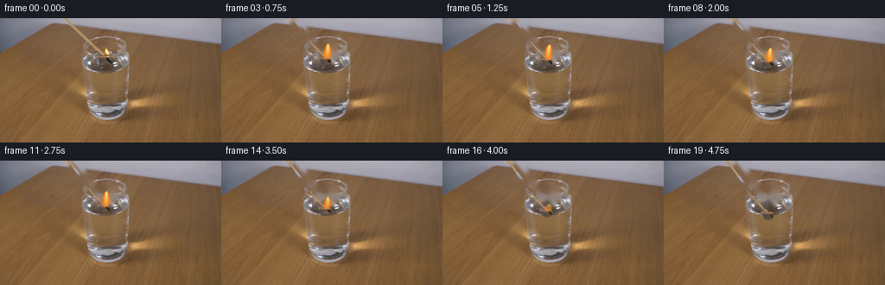
展开代码变化
--- 上一保存版本
+++ 本次保存版本
@@ -117,7 +117,8 @@
tip_y = base_y - height
s = np.clip((base_y - yy) / max(height, 1.0), 0.0, 1.0)
center = head_x + 1.0 + 1.8 * s + 0.35 * np.sin(phase + 5.0 * s)
- half_width = 6.0 * np.power(np.sin(np.pi * s + 0.03), 0.62) * (1.0 - 0.12 * s)
+ flame_profile = np.clip(np.sin(np.pi * s + 0.03), 0.0, None)
+ half_width = 6.0 * np.power(flame_profile, 0.62) * (1.0 - 0.12 * s)
half_width *= 1.0 + 0.08 * np.sin(phase * 2.3 + 7.0 * s)
radial = np.abs(xx - center) / np.maximum(half_width, 0.6)
inside_y = (yy >= tip_y) & (yy <= base_y)
候选 03播放与检查图
点击播放 · 原生 RGB 像素

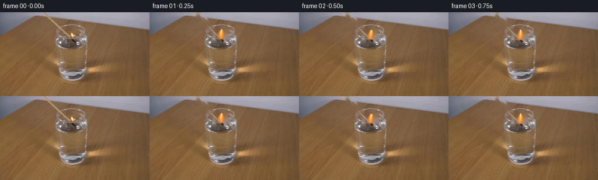
展开代码变化
--- 上一保存版本
+++ 本次保存版本
@@ -41,9 +41,9 @@
def match_alpha(dy):
"""Anti-aliased source-space mask for the wooden shaft and burnt head."""
yy, xx = np.mgrid[0:HEIGHT, 0:WIDTH].astype(np.float32)
- center = 85.0 + 0.745 * yy
+ center = 83.3 + 0.745 * yy
shaft_distance = np.abs(xx - center)
- shaft = 1.0 - smoothstep(1.15, 2.35, shaft_distance)
+ shaft = 1.0 - smoothstep(0.8, 1.7, shaft_distance)
shaft *= smoothstep(-1.0, 0.2, yy)
shaft *= 1.0 - smoothstep(45.0, 49.0, yy)
@@ -81,15 +81,15 @@
# Extend the shaft through the new sliver above the translated cutout.
if dy > 0.05:
yy, xx = np.mgrid[0:HEIGHT, 0:WIDTH].astype(np.float32)
- center = 85.0 + 0.745 * (yy - dy)
+ center = 83.3 + 0.745 * (yy - dy)
dist = np.abs(xx - center)
- ext_alpha = (1.0 - smoothstep(1.1, 2.3, dist)) * (yy < dy + 1.2)
+ ext_alpha = (1.0 - smoothstep(0.75, 1.65, dist)) * (yy < dy + 1.2)
profile = np.array(
[
- [150, 121, 91],
+ [125, 97, 72],
+ [163, 134, 104],
[190, 158, 120],
[176, 145, 105],
- [164, 134, 98],
[145, 116, 86],
],
np.float32,
@@ -144,7 +144,7 @@
y0, y1, x0, x1 = 55, 63, 91, 158
patch = source[y0:y1, x0:x1].astype(np.float32)
luma = patch.mean(axis=2)
- alpha = smoothstep(137.0, 176.0, luma)
+ alpha = 0.48 * smoothstep(151.0, 205.0, luma)
return y0, x0, patch, alpha.astype(np.float32)
候选 04播放与检查图
可观测工具轨迹
实际执行的命令与返回图片。
命令 1exit 0
/bin/bash -c "pwd && rg --files -g 'prompt.txt' -g 'GENERATION_RULES.md' -g '*.py' -g '*.sh' -g '*.json' -g '*.md' | sed -n '1,160p'"
命令 2exit 0
/bin/bash -c "sed -n '1,240p' prompt.txt"
命令 3exit 0
/bin/bash -c "sed -n '1,300p' GENERATION_RULES.md"
命令 4exit 0
/bin/bash -c "find . -maxdepth 2 -type f -printf '%p %s bytes\\n' | sort | sed -n '1,200p'"
命令 5exit 0
/bin/bash -c "sed -n '1,260p' artifact_io.py"
命令 6exit 0
/bin/bash -c "sed -n '1,260p' player_template.html"
命令 7exit 0
/bin/bash -c "python - <<'PY'
from PIL import Image
im=Image.open('first_frame.png')
print(im.mode, im.size)
print(im.getpixel((128,72)))
PY
python - <<'PY'
mods=['numpy','PIL','cv2','scipy','imageio','matplotlib','skimage']
for m in mods:
try:
mod=__import__(m)
print(m, getattr(mod,'__version__','ok'))
except Exception as e: print(m,'ERR',e)
PY"命令 8exit 0
/bin/bash -c "python - <<'PY'
from PIL import Image
im=Image.open('first_frame.png')
im.crop((45,0,180,125)).resize((540,500), Image.Resampling.NEAREST).save('.tmp/first_crop4x.png')
PY"命令 9exit 0
/bin/bash -c "python - <<'PY'
from PIL import Image, ImageDraw
im=Image.open('first_frame.png').convert('RGB')
crop=im.crop((40,0,190,125)).resize((900,750),Image.Resampling.NEAREST)
d=ImageDraw.Draw(crop)
for x in range(0,151,10):
X=(x)*6
d.line([(X,0),(X,750)],fill=(255,0,255),width=1)
d.text((X+2,2),str(x+40),fill=(255,255,255))
for y in range(0,126,10):
Y=y*6
d.line([(0,Y),(900,Y)],fill=(0,255,255),width=1)
d.text((2,Y+2),str(y),fill=(255,255,255))
crop.save('.tmp/grid.png')
PY"命令 10exit 0
/bin/bash -c "python - <<'PY'
from PIL import Image
import numpy as np
im=np.array(Image.open('first_frame.png'))
# print local values around match center at y values
for y in [0,2,5,10,15,20,25,30,35,40,45,50,55,58,60]:
print('\\ny',y)
for x in range(65,136):
r,g,b=map(int,im[y,x])
if max(r,g,b)-min(r,g,b)>20 or r>160:
print(f'{x}:{r:3},{g:3},{b:3}',end=' ')
print()
PY"命令 11exit 0
/bin/bash -c "python - <<'PY'
from PIL import Image
im=Image.open('first_frame.png')
im.crop((110,25,138,52)).resize((560,540), Image.Resampling.NEAREST).save('.tmp/flame20x.png')
im.crop((55,0,140,52)).resize((680,416), Image.Resampling.NEAREST).save('.tmp/match8x.png')
PY"命令 12exit 0
/bin/bash -c "python - <<'PY'
from PIL import Image
import numpy as np
im=np.array(Image.open('first_frame.png')).astype(int)
# black match core positions: low local brightness around expected line; print rows x=65..128
for y in range(0,55):
vals=[]
for x in range(65,129):
r,g,b=im[y,x]
if r+g+b<220:
vals.append(x)
if vals:
# contiguous runs
runs=[]; s=p=vals[0]
for v in vals[1:]:
if v>p+1:runs.append((s,p));s=v
p=v
runs.append((s,p))
print(y,runs)
PY"命令 13exit 0
/bin/bash -c "python - <<'PY'
from PIL import Image
import numpy as np
im=np.array(Image.open('first_frame.png')).astype(float)
# derive match line using dark-ish pixels below? inspect each y x min around predicted x=87-0.42y
for y in range(0,57):
x0=87-.43*y
xs=np.arange(max(0,int(x0)-4),min(256,int(x0)+5))
pix=im[y,xs]
print(f'{y:02d} x~{x0:.1f}', ' '.join(f'{int(x)}:{int(p[0]):3}/{int(p[1]):3}/{int(p[2]):3}' for x,p in zip(xs,pix)))
PY"命令 14exit 0
/bin/bash -c "python - <<'PY'
from PIL import Image,ImageDraw
im=Image.open('first_frame.png').convert('RGB')
x0,y0,x1,y1=108,27,136,55
s=16
crop=im.crop((x0,y0,x1,y1)).resize(((x1-x0)*s,(y1-y0)*s),Image.Resampling.NEAREST)
d=ImageDraw.Draw(crop)
for x in range(x0,x1+1):
X=(x-x0)*s; d.line([(X,0),(X,crop.height)],fill=(255,0,255),width=1); d.text((X+1,1),str(x),fill=(255,255,255))
for y in range(y0,y1+1):
Y=(y-y0)*s; d.line([(0,Y),(crop.width,Y)],fill=(0,255,255),width=1); d.text((1,Y+1),str(y),fill=(255,255,255))
crop.save('.tmp/flame_grid16.png')
PY"命令 15exit 0
/bin/bash -c "python - <<'PY'
from PIL import Image, ImageDraw
import numpy as np, cv2
im=cv2.cvtColor(np.array(Image.open('first_frame.png')),cv2.COLOR_RGB2BGR)
mask=np.zeros(im.shape[:2],np.uint8)
# shaft polygon
p=np.array([[80,0],[88,0],[128,47],[118,48]],np.int32)
cv2.fillPoly(mask,[p],255)
# flame ellipse and match head
cv2.ellipse(mask,(123,39),(9,12),0,0,360,255,-1)
cv2.ellipse(mask,(121,48),(11,8),0,0,360,255,-1)
mask=cv2.dilate(mask,np.ones((3,3),np.uint8),iterations=1)
out=cv2.inpaint(im,mask,5,cv2.INPAINT_TELEA)
Image.fromarray(cv2.cvtColor(out,cv2.COLOR_BGR2RGB)).save('.tmp/base_inpaint.png')
Image.fromarray(mask).save('.tmp/mask.png')
Image.open('.tmp/base_inpaint.png').crop((55,0,145,75)).resize((720,600),Image.Resampling.NEAREST).save('.tmp/base_crop8.png')
PY"命令 16exit 0
/bin/bash -c "python - <<'PY'
from PIL import Image
import numpy as np, cv2
src=np.array(Image.open('first_frame.png'))
base=np.array(Image.open('.tmp/base_inpaint.png'))
mask=np.array(Image.open('.tmp/mask.png'))
# candidate sprite bounding region
x0,y0,x1,y1=78,0,134,58
rgb=src[y0:y1,x0:x1].astype(float)
# save exact enlarged initial
Image.fromarray(src[y0:y1,x0:x1]).resize(((x1-x0)*10,(y1-y0)*10),Image.Resampling.NEAREST).save('.tmp/sprite_orig10.png')
# inspect base
Image.fromarray(base).save('.tmp/base_full.png')
print('mask count',np.count_nonzero(mask))
PY"命令 17exit 0
/bin/bash -c "python - <<'PY'
from PIL import Image
import numpy as np
src=np.array(Image.open('first_frame.png')).astype(float)
base=np.array(Image.open('.tmp/base_inpaint.png')).astype(float)
d=np.sqrt(((src-base)**2).sum(2))
for th in [3,5,8,12,20,30,50]:
m=(d>th)
print(th, m.sum(), m[:58,70:136].sum())
# crop visualize heat
v=np.clip(d*5,0,255).astype(np.uint8)
Image.fromarray(v).crop((60,0,145,75)).resize((680,600),Image.Resampling.NEAREST).save('.tmp/diff_crop.png')
PY"命令 18exit 0
/bin/bash -c "python - <<'PY'
from PIL import Image
im=Image.open('first_frame.png')
im.crop((92,0,140,60)).resize((960,1200), Image.Resampling.NEAREST).save('.tmp/tip16.png')
PY"命令 19exit 0
/bin/bash -c "python - <<'PY'
from PIL import Image
import numpy as np
im=np.array(Image.open('first_frame.png'))
for x in [105,110,115,120,125,130,135,140]:
print('\\nx',x)
for y in range(20,80):
r,g,b=map(int,im[y,x])
print(f'{y}:{r:3},{g:3},{b:3}',end=' ')
if (y-19)%6==0: print()
print()
PY"命令 20exit 0
/bin/bash -c "python - <<'PY'
from PIL import Image
import numpy as np
im=np.array(Image.open('first_frame.png')).astype(int)
# simple local background model by using horizontal medians from x 140..160, vertical interpolation maybe
for y in range(15,66):
print(y, [tuple(im[y,x]) for x in range(103,138,4)])
PY"命令 21exit 0
/bin/bash -c "python - <<'PY'
from PIL import Image
import numpy as np, cv2
src=cv2.cvtColor(np.array(Image.open('first_frame.png')),cv2.COLOR_RGB2BGR)
mask=np.zeros(src.shape[:2],np.uint8)
# shaft exact narrow polygon with margin
cv2.fillPoly(mask,[np.array([[77,0],[88,0],[126,47],[119,49]],np.int32)],255)
# head and flame mask, choose ellipse bbox
cv2.ellipse(mask,(123,41),(10,11),0,0,360,255,-1)
cv2.ellipse(mask,(120,48),(7,5),0,0,360,255,-1)
# small glow/shadow
cv2.ellipse(mask,(128,43),(10,8),0,0,360,255,-1)
for rad in [3,5,8,12]:
out=cv2.inpaint(src,mask,rad,cv2.INPAINT_NS)
Image.fromarray(cv2.cvtColor(out,cv2.COLOR_BGR2RGB)).save(f'.tmp/ns{rad}.png')
out=cv2.inpaint(src,mask,rad,cv2.INPAINT_TELEA)
Image.fromarray(cv2.cvtColor(out,cv2.COLOR_BGR2RGB)).save(f'.tmp/telea{rad}.png')
PY"命令 22exit 0
/bin/bash -c "python - <<'PY'
from PIL import Image,ImageDraw
files=['telea5','telea8','telea12','ns5','ns8','ns12']
out=Image.new('RGB',(6*280,240),(20,20,20));d=ImageDraw.Draw(out)
for i,f in enumerate(files):
im=Image.open('.tmp/'+f+'.png').crop((55,0,145,70)).resize((270,210),Image.Resampling.NEAREST)
out.paste(im,(i*280,30));d.text((i*280+4,4),f,fill='white')
out.save('.tmp/inpaints.png')
PY"命令 23exit 0
/bin/bash -c 'MPLCONFIGDIR=.tmp/mpl python generate.py'
命令 24exit 0
/bin/bash -c 'MPLCONFIGDIR=.tmp/mpl python generate.py'
命令 25exit 0
/bin/bash -c "python - <<'PY'
from PIL import Image,ImageDraw
idxs=[0,1,3,6,9,12,14,16,18,19]
out=Image.new('RGB',(5*300,2*250),(20,20,20));d=ImageDraw.Draw(out)
for j,i in enumerate(idxs):
im=Image.open(f'frames/{i:02d}.png').crop((65,0,160,75)).resize((285,225),Image.Resampling.NEAREST)
x=(j%5)*300;y=(j//5)*250
out.paste(im,(x,y+25));d.text((x+4,y+4),f'frame {i:02d}',fill='white')
out.save('.tmp/crops_sheet.png')
PY"命令 26exit 0
/bin/bash -c "python - <<'PY'
from PIL import Image
import numpy as np
src=np.array(Image.open('first_frame.png'))
f0=np.array(Image.open('frames/00.png'))
print('frame0 exact',np.array_equal(src,f0),'diff',np.abs(src.astype(int)-f0.astype(int)).max())
# print colors at translated match lines frames to inspect edge
for i in [1,3,6,9,12,14,16,18,19]:
a=np.array(Image.open(f'frames/{i:02d}.png'))
print(i, 'center', tuple(a[30,int(85+0.745*(30-16.2*(0.55*(i/19)+0.45*(i/19)**2)))]))
PY"命令 27exit 0
/bin/bash -c "MPLCONFIGDIR=.tmp/mpl python generate.py && python - <<'PY'
from PIL import Image,ImageDraw
idxs=[0,1,3,6,9,12,14,16,18,19]
out=Image.new('RGB',(5*300,2*250),(20,20,20));d=ImageDraw.Draw(out)
for j,i in enumerate(idxs):
im=Image.open(f'frames/{i:02d}.png').crop((65,0,160,75)).resize((285,225),Image.Resampling.NEAREST)
x=(j%5)*300;y=(j//5)*250
out.paste(im,(x,y+25));d.text((x+4,y+4),f'frame {i:02d}',fill='white')
out.save('.tmp/crops_sheet2.png')
PY"命令 28exit 0
/bin/bash -c "python - <<'PY'
from PIL import Image,ImageDraw
out=Image.new('RGB',(3*700,2*500),(20,20,20));d=ImageDraw.Draw(out)
for j,i in enumerate([0,1,2,10,14,19]):
im=Image.open(f'frames/{i:02d}.png').crop((55,0,170,80)).resize((690,480),Image.Resampling.NEAREST)
x=(j%3)*700;y=(j//3)*500
out.paste(im,(x,y+20));d.text((x+4,y+2),f'frame {i:02d}',fill='white')
out.save('.tmp/crops_big.png')
PY"命令 29exit 0
/bin/bash -c "python - <<'PY'
from PIL import Image
im=Image.open('frames/00.png')
im.crop((75,0,135,60)).resize((720,720),Image.Resampling.NEAREST).save('.tmp/frame0tip.png')
PY"视觉工具实际返回图片 1

视觉工具实际返回图片 2
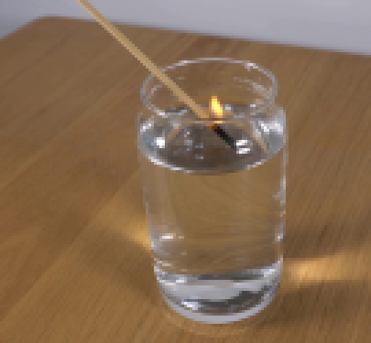
视觉工具实际返回图片 3
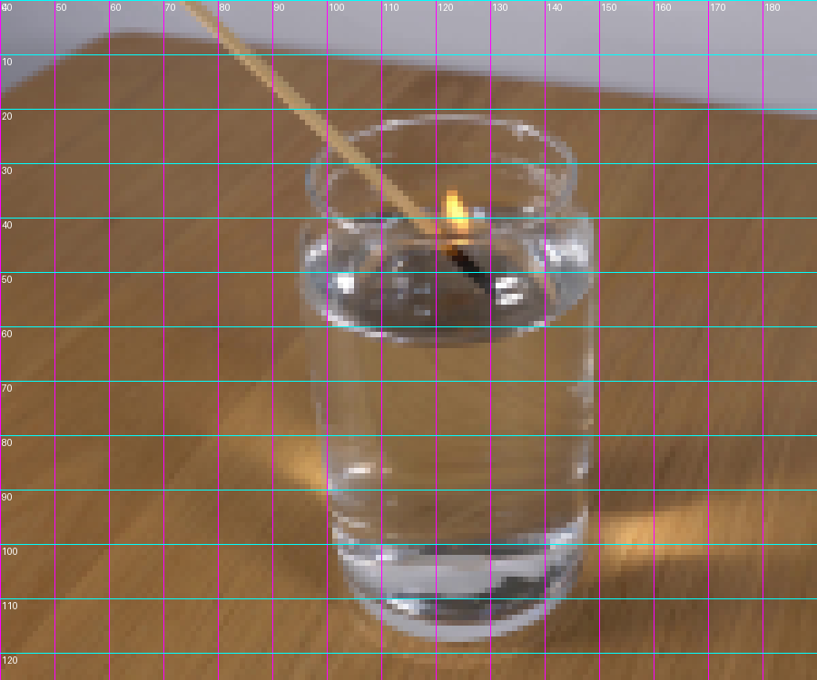
视觉工具实际返回图片 4
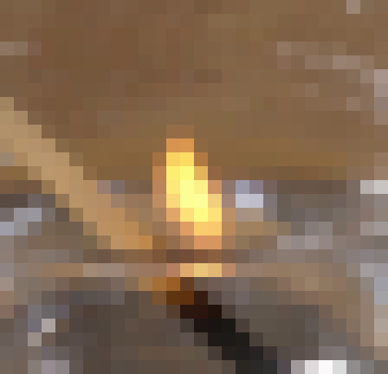
视觉工具实际返回图片 5
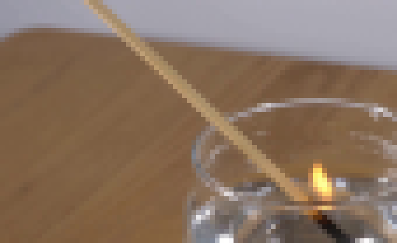
视觉工具实际返回图片 6
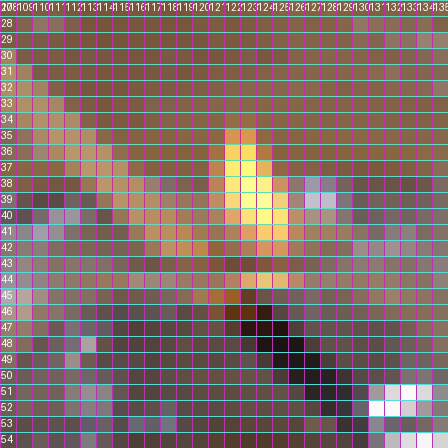
视觉工具实际返回图片 7
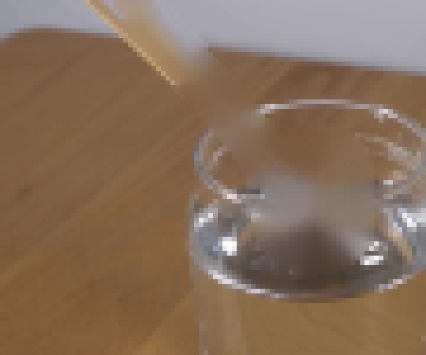
视觉工具实际返回图片 8
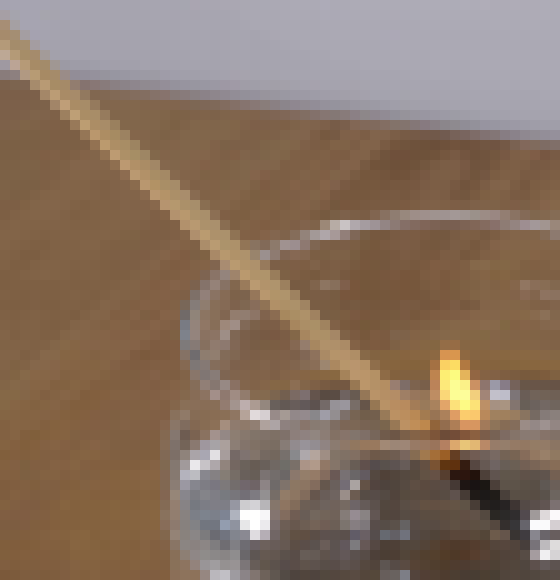
视觉工具实际返回图片 9
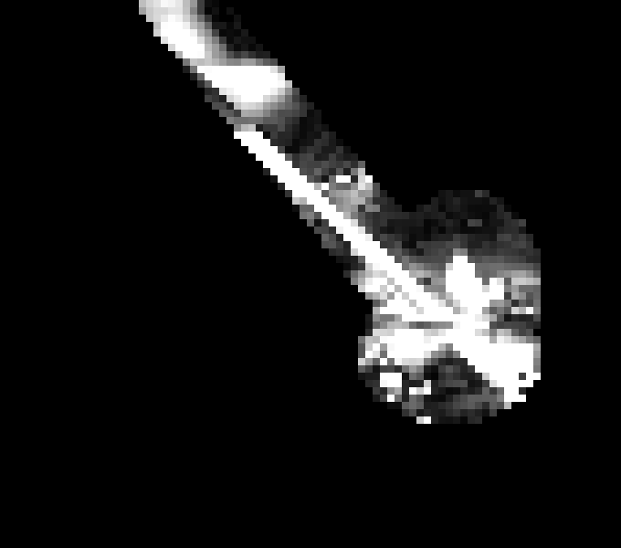
视觉工具实际返回图片 10
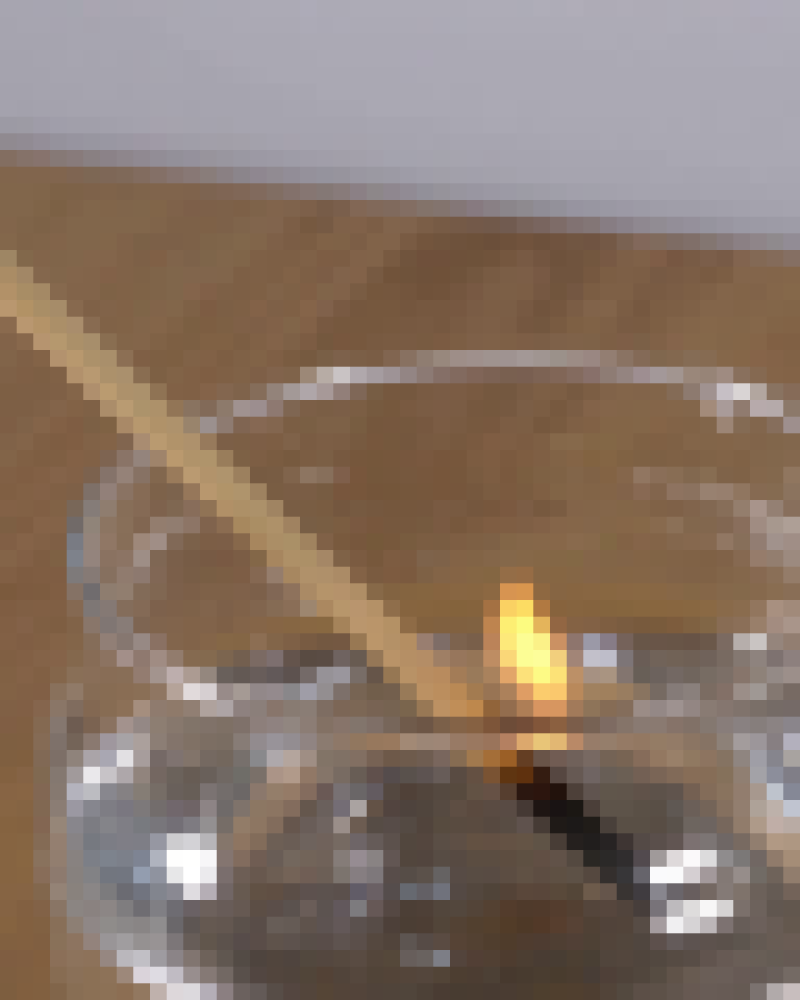
视觉工具实际返回图片 11
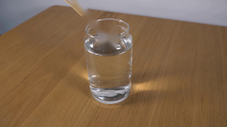
视觉工具实际返回图片 12
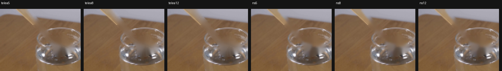
视觉工具实际返回图片 13

视觉工具实际返回图片 14
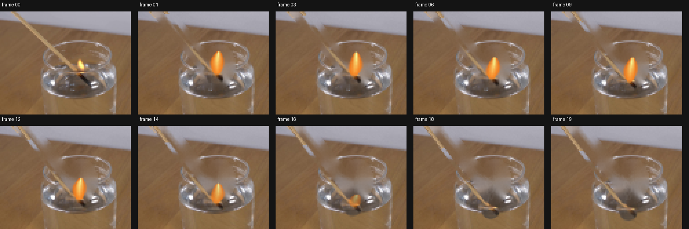
视觉工具实际返回图片 15
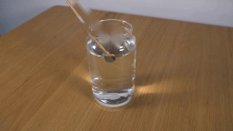
视觉工具实际返回图片 16
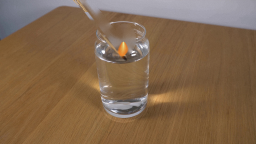
视觉工具实际返回图片 17
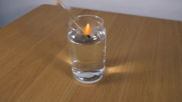
视觉工具实际返回图片 18
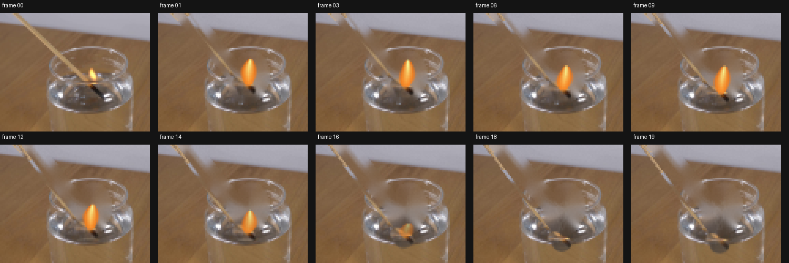
视觉工具实际返回图片 19
视觉工具实际返回图片 20
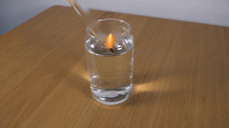
视觉工具实际返回图片 21
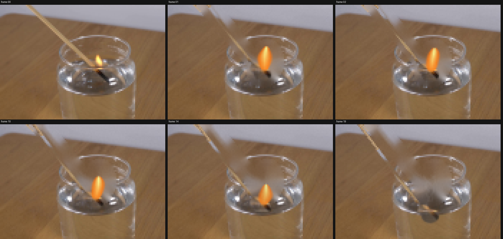
视觉工具实际返回图片 22
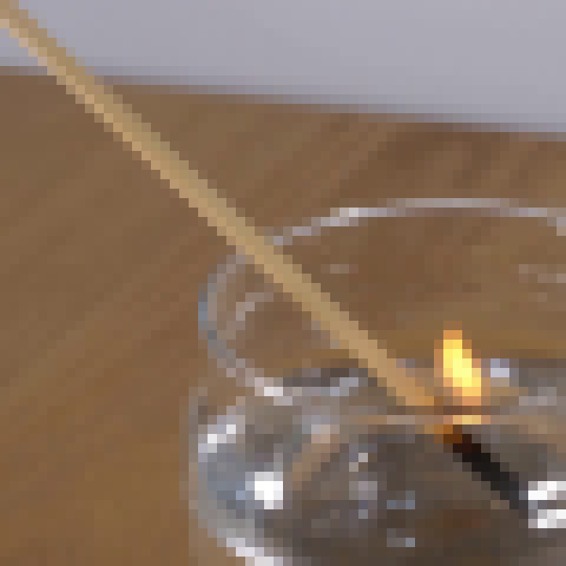
保存候选 4 份；完成命令 29 次；可验证图片返回 22 张。原始 API 响应与完整日志保留在本地。